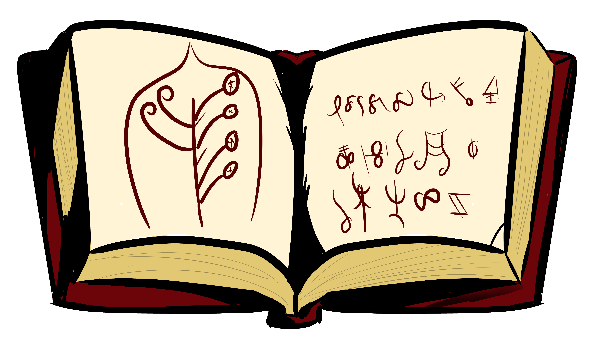

The Lexicon The lexicon is the key resource for Deciphering and transcribing the runic language alchemist used in recipes and theories.
Below we have the open lexicon!
Click it
to continue to Denis Moskwitz's page, after, click the like below for my Recipe that uses it's Code!
 My Recipe for something Great!